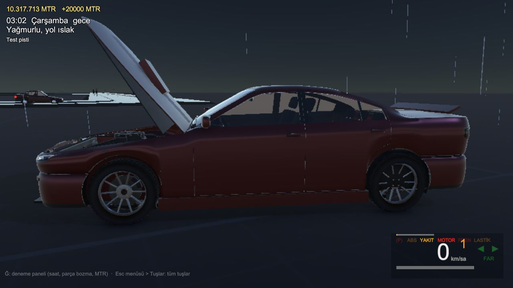
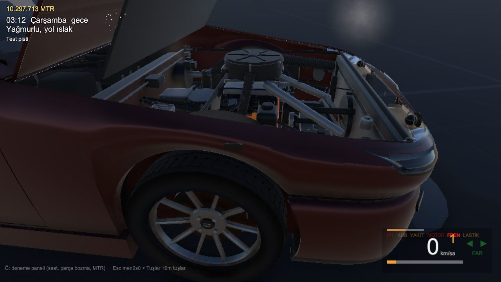

Projeler / Streetline: Anatolia
Streetline: Anatolia
Ankara'nın tamamında geçen, tamamen çevrimdışı, gerçekçi açık dünya sürüş oyunu. Gerçek para yok, silah yok, çevrimiçi zorunluluk yok: sadece yol, araba ve şehir.


Neler var?
Oyun aşama aşama geliştiriliyor; aşağıdakiler şu an üzerinde çalışılan sistemler.
- Gerçek Ankaraİlçe ilçe üretilen şehir, gerçek yol ağı ve trafik.
- Gerçekçi arabalarKurgusal markalı, gerçek ölçülerde arabalar; ayrı ayrı değiştirilebilen parçalar.
- Hasar ve bakımKapı, kaput, çamurluk kopabiliyor; tamirhanede onarılıyor.
- Yakıt, lastik, motorGösterge paneli ve arıza uyarıları, OBD bağlantısı.
- Saat ve hava durumuGece-gündüz döngüsü, yağmur ve ıslak zemin.
- MTR ekonomisiGörevler, ikinci el piyasası, modifiye ve dyno. Gerçek para yok.
Oyun henüz geliştirme aşamasında. İndirilebilir sürüm hazır olduğunda bu sayfaya eklenecek.